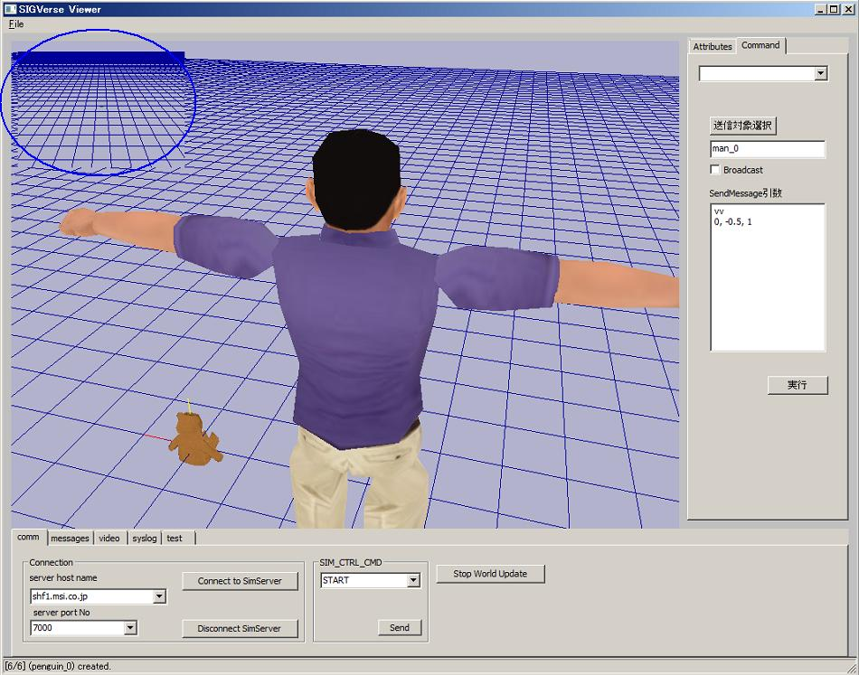
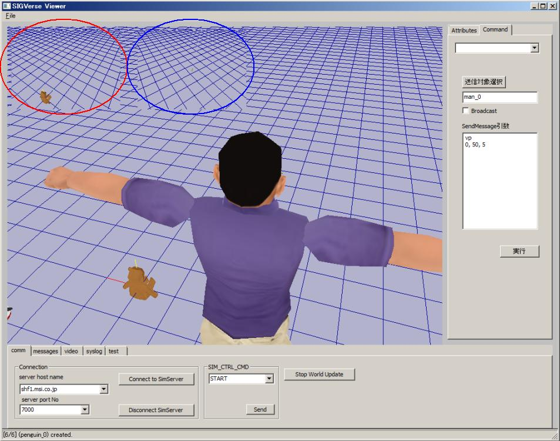

SIGViewerは、エージェント視点からの画像を画面左上部のサブウィンドウに表示できます．
サブウィンドウの個数は、starup.cfgファイルのSUB_CAMERA_NUM設定値により変化します．
1を設定した場合は1個（＝単眼視点）、2を設定した場合は2個（＝複眼視点）となります．
startup.cfgでSUB_CAMERA_NUM=1とした場合です．この場合、単一視点からの1枚の画像が表示されます．

このときの視点の位置は、エージェントの以下のプロパティにより決まります．
vpx, vpy, vpz vvx, vvy, vvz
なお、(vpx, vpy, vpz), (vvx, vvy, vvz)は、エージェントの位置(x, y, z)、方向(qw, qx, qy, qz)からの相対値で指定します．
startup.cfgでSUB_CAMERA_NUM=2とした場合です．この場合は、左目、右目それぞれの視点からの2枚の画像が表示されます．

このとき、視点の位置は、以下のプロパティにより決まります．
●左目（左側のサブウィンドウ） lepx, lepy, lepz levx, levy, levz ●右目（右側のサブウィンドウ） repx, repy, repz revx, revy, revz
なお、左目パラメータ((lepx, lepy, lepz), (levx, levy, levz)), 右目パラメータ((repx, repy, repz), (revx, revy,revz))の両方とも、 エージェントの位置(x, y, z)、方向(qw, qx, qy, qz) ビューの位置(vpx, vpy, vpz), 方向(vvx, vvy, vvz) からの相対値での指定となります．
 （株）数理システム
（株）数理システム